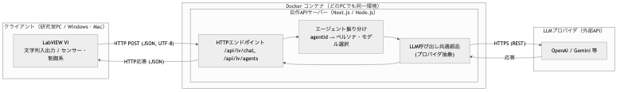
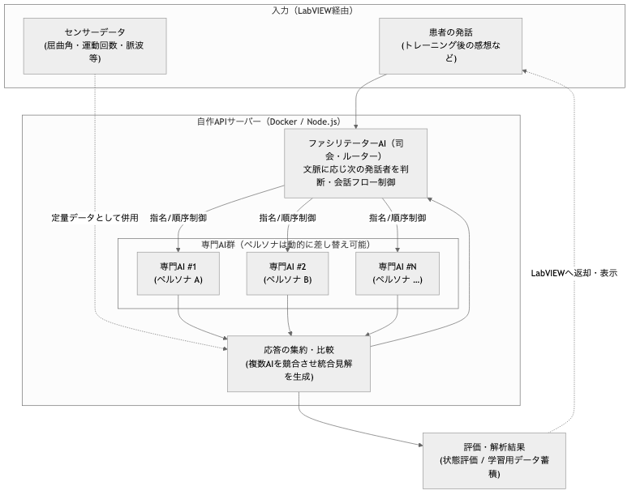
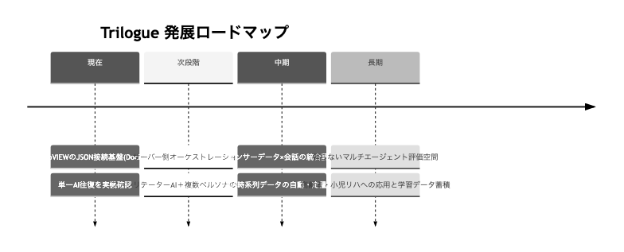

目的: 本システムの現状（As-Is）と、今後構築するマルチエージェント対話システム（To-Be）の 全体像・データフローを可視化し、研究室での共有および中間発表のたたき台とする。 最終更新: 2026-07-13 各図に一般向けの要約（「要するに」）を追加。
本資料の読み方：各図には冒頭に 📌「要するに」（専門知識がなくても分かる説明） を置き、 その後に 技術的な詳細 を記載しています。まず「要するに」だけ追えば全体像がつかめます。
リハビリテーション評価を、従来の統計的手法（FMA・BRS等）だけでなく 電子的に取得したセンサーデータで定量的・自動的に行えるようにする。
📌 要するに：LabVIEW（計測・操作の画面）に打ち込んだ文章を、間に立つサーバーがAIへ橋渡しし、 AIの返事を受け取って画面に持ち帰る仕組みです。いわば 「人とAIをつなぐ専用の“電話交換台”」。 現状は “1人のAIと1往復の会話”が実機で動作済み です。
（技術的に言うと） LabVIEW を HTTP クライアント、Docker 上の自作APIサーバーを LLM ブリッジとし、 外部LLMへ HTTPS で中継する構成。1対1の往復が動作済み。

現状のポイント
docker compose up 一発で起動。Win10/11・Mac で同一環境で動く（汎用性）{ "text": "...", "agentId": "..." } のJSONにしてPOSTagentId から該当ペルソナ（System指示）とモデルを選択{ ok, reply, agentId, agentName, model, error } でLVへok で成否分岐し reply を表示設計の肝：LV側はHTTPステータス分岐をせず
okだけで判定できるよう、 サーバーが応答形を平坦・一定に保つ（LV実装を最小化）。
📌 要するに：「司会役のAIが話を仕切り、役割の違う複数のAIに話を振って、意見をまとめる“会議室”」 を作ります。 患者さんの話（主観）とセンサーの数値（客観）の両方を材料に、複数のAIが多角的に見立てを出し合い、 偏りの少ない評価につなげます。AIの“役者（役割）”は後から自由に入れ替え可能 です。
（技術的に言うと） 患者の発話とセンサーデータを入力に、ファシリテーター（司会）AI が会話を制御し、 差し替え可能なペルソナを持つ複数の専門AI に振り分け、応答を集約して評価につなげる。

| 段階 | 内容 | 状態 |
|---|---|---|
| A | LV主導：agentId を切り替えて複数AIを順に呼ぶ（最小の「AI同士の会話」） |
既存基盤で実現可能 |
| B | サーバー側オーケストレーション：1リクエストで複数AIの応答をまとめて返す | 次の実装対象 |
| C | ファシリテーターAI＋発話順ポリシー化（偏り制御・質問ガイド） | To-Beの本命 |
研究としての誠実さのため、どこが自分の実装で、どこがオープンソースかを明示する。
| レイヤ | 使用技術 | 区分 |
|---|---|---|
| LabVIEW VI（クライアント） | LabVIEW 2016 標準（HTTP Client VIs / JSON VIs） | 自作VI（標準部品を配線） |
| 実行環境 | Docker | OSS（再現性・移植性のため採用） |
| Webフレームワーク | Next.js（Route Handlers） | OSS（土台） |
| 言語・ランタイム | TypeScript / Node.js | OSS（土台） |
| LLM接続 | OpenAI 公式 SDK 等 | OSS（公式ライブラリ） |
| LV用API・振り分け・ペルソナ定義・(将来)会話制御 | 本プロジェクトの独自コード | 自作（本研究の中核） |
docker compose up）。📌 要するに：「まず①1対1で会話 → ②複数AIの“会議”化 → ③センサーの数値も混ぜて自動評価」 の順に育てます。 今は①が完成、次に②へ進む段階です。将来は数値と会話を合わせた自動評価まで発展させます。
